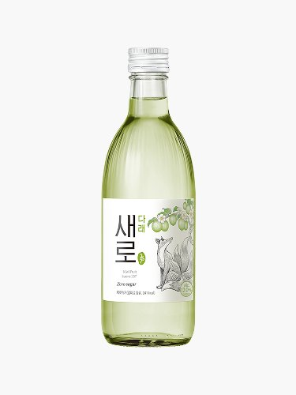

새로 다래
2025.04 새로 플레이버 2탄, 토종과일

- 분류
- 플레이버
- 도수
- 12도
- 출시
- 2025.04
- 제조사
- 롯데주류
- 지역
- 서울 · 경기
이름 유래
새로 + 다래(Wild Kiwi, 한국 야생 다래). 키위 원종인 한국 토종 과일 다래를 선택해 한국적 자연 재료 강조. 새로의 전통·자연 감성 브랜딩에 맞춰 외래 과일 대신 토종 과일 채택.
상세 연혁
제로슈거. 새로 플레이버 2탄(2025년 4월). 다래 특유의 청포도·키위 중간 맛. 토종 과일 차별화 전략으로 에이슬·순하리와 차별화.
지역별 소주 브랜드 전체 보기 →